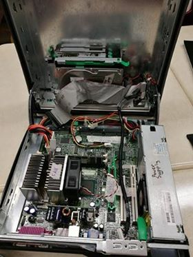
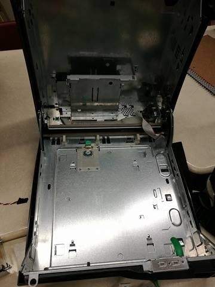
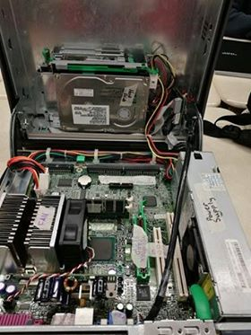

We were split into groups and disassembled a computer system unit. We were asked to identify each of the parts and the describe their function. Finally, we were asked to explain how all the components work and interact with each other so that they function as a computer that we use everyday. Here are pictures of before disassembling the unit, the empty computer case and the reassembled product:
Before Picture of the System Unit
Picture of the empty Computer Case
After Picture of the System Unit
The motherboard is responsible for holding the CPU, memory chips such as RAM and ROM, expansion slots, power connectors and any other microchips required to function the PC. It holds and allows communication between many of the crucial electronic components of a system, such as the central processing unit (CPU) and memory, and provides connectors for other peripherals. The base of a motherboard consists of a very firm sheet of non-conductive material, typically some sort of rigid plastic. The motherboard is like a city connecting all the important parts in a computer.
A miniaturized electronic component that is referred to the “brain” of the PC. The CPU is also known as the processor or microprocessor. It is responsible for:
Most modern CPUs are microprocessors, meaning they are contained on a single integrated circuit (IC) chip. CPUs aren’t only found in desktop or laptop computers, many electronic devices now rely on them for their operation. Mobile phones, DVD players and washing machines are examples of equipment that have a CPU. Although the instructions performed by the CPU are relatively simple, the CPU can execute many millions of instructions every second. This is what makes the PC such a powerful tool.
A fan is attached to a computer case and is responsible for keeping it cool by drawing hot air out of the computer when it is running. It also prevents the CPU from overheating.
RAM (Random-Access Memory), temporarily stores information used by components of a PC. This means that information within the RAM will be lost when a PC is reset or powered off. The RAM can also temporarily store programs and data. The more RAM a computer has the faster it can process data and information making it generally faster. There are 2 types of RAM:
The two types of RAM differ in the technology they use to hold data, with DRAM being the more common type. In terms of speed, SRAM is faster. DRAM needs to be refreshed thousands of times per second while SRAM does not need to be refreshed, which is what makes it faster than DRAM.
ROM is a special type of memory (a miniaturized electronic component) which provides permanent storage of information, that has been programmed (or “written” once) into the PC during construction at factory. Thereafter, ROM can be used only to read from, and not to write to. The PC user cannot change this information. For example ROM contains the information that is used when the PC is turned on or reset. The ROM is sustained by a small long-life battery in your computer. ROM is referred to as being nonvolatile, whereas RAM is volatile. In addition, ROMs are used extensively in calculators and peripheral devices such as laser printers, whose fonts are often stored in ROMs.
A power supply unit (or PSU) converts mains AC to low-voltage regulated DC power for the internal components of a computer. Modern personal computers universally use switched-mode power supplies. Some power supplies have a manual switch for selecting input voltage, while others automatically adapt to the mains voltage. The power supply is responsible for converting the incoming electricity supply to the 5v and 12v DC power that is required by the PC. The 5v supply is used to power the circuit boards on the PC. The 12v supply is used to power motor-driven devices such as hard drives or CD-ROMs.
The hard drive is the storage area of the PC that can be divided into directories and folders. It permanently stores and retrieves data, therefore when we save something, it goes to the hard drive. The Hard Disk Drive uses magnetic storage to store and retrieve digital information using one or more rigid rapidly rotating disks (platters) coated with magnetic material. Most basic hard drives consist of a number of disk platters that are positioned around a spindle inside a sealed chamber. The chamber also includes read-and-write heads and motors. Hard Drives need to be formatted so the read-and-write heads can find their way around the platters.
A Floppy Disk Drive, also called FDD or FD for short, is a computer disk drive that enables a user to save data to removable diskettes. It reads and writes data to a small, circular piece of metal-coated plastic similar to audio cassette tape. The major parts of an FDD are:
CD-ROM (Compact Disc, read-only-memory) is an adaptation of the CD that is designed to store computer data in the form of text and graphics, as well as hi-fi stereo sound. CD drives are read only so unlike a floppy disc, you can’t write on the disc. CD-ROM drives have speeds ranging from 1x all the way up to 72x, meaning it reads the CD roughly 72 times faster than the 1x version. A CD-ROM drive can be opened by pressing the tray eject button on the front of the drive. To close the CD-ROM drive, press the tray or the eject button again.
A dedicated socket in the computer for a mouse. On the first desktop PCs, the mouse connected via the serial port, which was superseded by the PS/2 port. Today, mice plug into any USB port, although motherboards with PS/2 sockets are still made. The PS/2 port was designed by IBM in 1987 (30 years ago) as a port to connect keyboards, mice, and other input devices to an IBM compatible computer.
A Video Graphics Array (VGA) connector is a three-row 15-pin DE-15 connector. The 15-pin VGA connector was provided on many video cards, computer monitors, laptop computers, projectors, and high definition television sets. The VGA standard has been replaced by SVGA and although these cables and connectors are still referred to as VGA they are technically SVGA. Although it is not uncommon to still find the VGA cable and connector with today's computers, monitors, protectors, and TV's. This type of connector is becoming obsolete and being replaced by the DVI and HDMI connector and cable.
A capacitor consists of a metal tube with a dielectric (insulator) in the middle. They are capable of helping to rectify currents and storing electricity in an electric field. In a computer, they usually power small parts in large quantities. Big capacitors are used in computer power supplies. Tiny discrete ceramic and tantalum capacitors are built on the outside of the chip package or surround the chip on the motherboard. In signal processing, a capacitor and resistor smooth the spikes and sharp edges from a signal.
Alternatively referred to as a bus slot or expansion port, an expansion slot is connection or port located inside a computer on the motherboard or riser board that allows a computer hardware expansion card to be connected. For example, if you wanted to install a new video card in the computer, you'd purchase a video expansion card and install that card into the compatible expansion slot. They can house different expansion cards that have different functions.
A sound card (also known as an audio card) is an internal expansion card that provides input and output of audio signals to and from a computer under control of computer programs. The term sound card is also applied to external audio interfaces used for professional audio applications. Typical uses of sound cards include providing the audio component for multimedia applications such as music composition, editing video or audio, presentation, education and entertainment (games) and video projection.
Internal Speaker, Alternatively referred to as a PC speaker, onboard speaker, and system speaker, the internal speaker is a basic speaker on a motherboard that creates beeps, beeping noises, and mono tones. This speaker is very basic and is not a speaker for playing songs, music, or other complex sounds generated in a game.